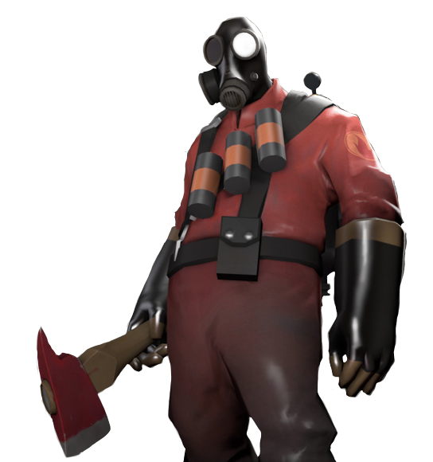
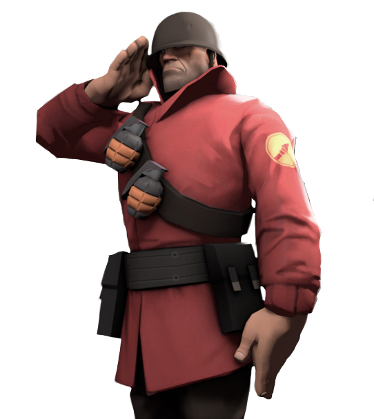
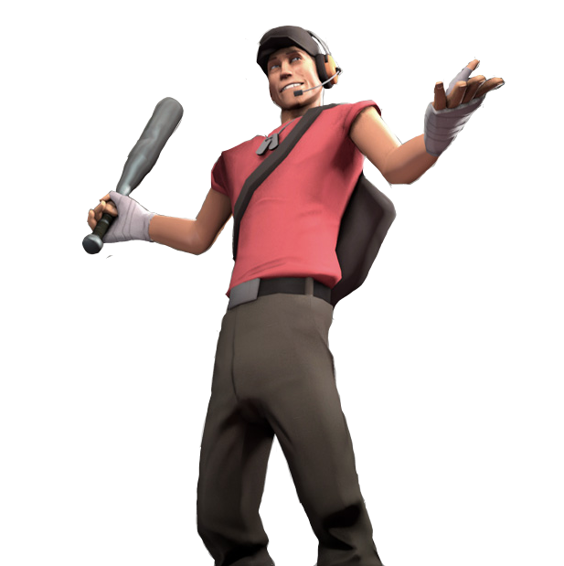

Pyro:

Location of Origin: Unknown
Role: Offense
“Only two things are known for sure about the mysterious Pyro: he sets things on fire and he doesn't speak. In fact, only the part about setting things on fire is undisputed. Some believe his occasional rasping wheeze may be an attempt to communicate through a mouth obstructed by a filter and attached to lungs ravaged by constant exposure to his asbestos-lined suit. Either way, he's a fearsome, inscrutable, on-fire Frankenstein of a man - if he even is a man.” -Valve
Flamethrower: This heatwave has to the ability to burn your enemies to a crisp and blast them far away. Make sure to be close to enemies. Use the airblast to push people off cliffs to their death.
Shotgun: Sometimes a flamethrower isn’t enough. For those enemies running away for a medic, try to finish them off with this classic weapon.
Fire Axe: Try backing enemies into a corner using the airblast and cut them into pieces using this Fireman’s axe.
Soldier:

Location of Origin: Midwest, USA
Role: Offense
“Though he wanted desperately to fight in World War 2, the Soldier was rejected from every branch of the U.S. military. Undaunted, he bought his own ticket to Europe. After arriving and finally locating Poland, the Soldier taught himself how to load and fire a variety of weapons before embarking on a Nazi killing spree for which he was awarded several medals that he designed and made himself. His rampage ended immediately upon hearing about the end of the war in 1949.” -Valve
Rocket launcher: The most important weapon in the Soldier’s arsenal. Use it to blow up enemies and escape quickly by rocket jumping.
Shotgun: Short range but reliable, make sure to keep this in mind during close combat when you are out of rockets. Finish off enemies with a blast and shoot combo.
Shovel: When all else fails the shovel is there to be your last resort.
Scout:

Location of Origin: Boston, Massachusetts, USA
Role: Offense
“The youngest of eight boys from the south side of Boston, the Scout learned early how to problem solve with his fists. With seven older brothers on his side, fights tended to end before the runt of the litter could maneuver into punching distance, so the Scout trained himself to run. He ran everywhere, all the time, until he could beat his pack of mad dog siblings to the fray.” -Valve
ScatterGun: Blast Shotgun shells into your enemy with this reliable gun. Quickly fill targets with lead and run away.
Pistol: Finish off low health enemies when you need to reload your scattergun.
Bat: Bash the skulls of anyone who tries to get in your way.